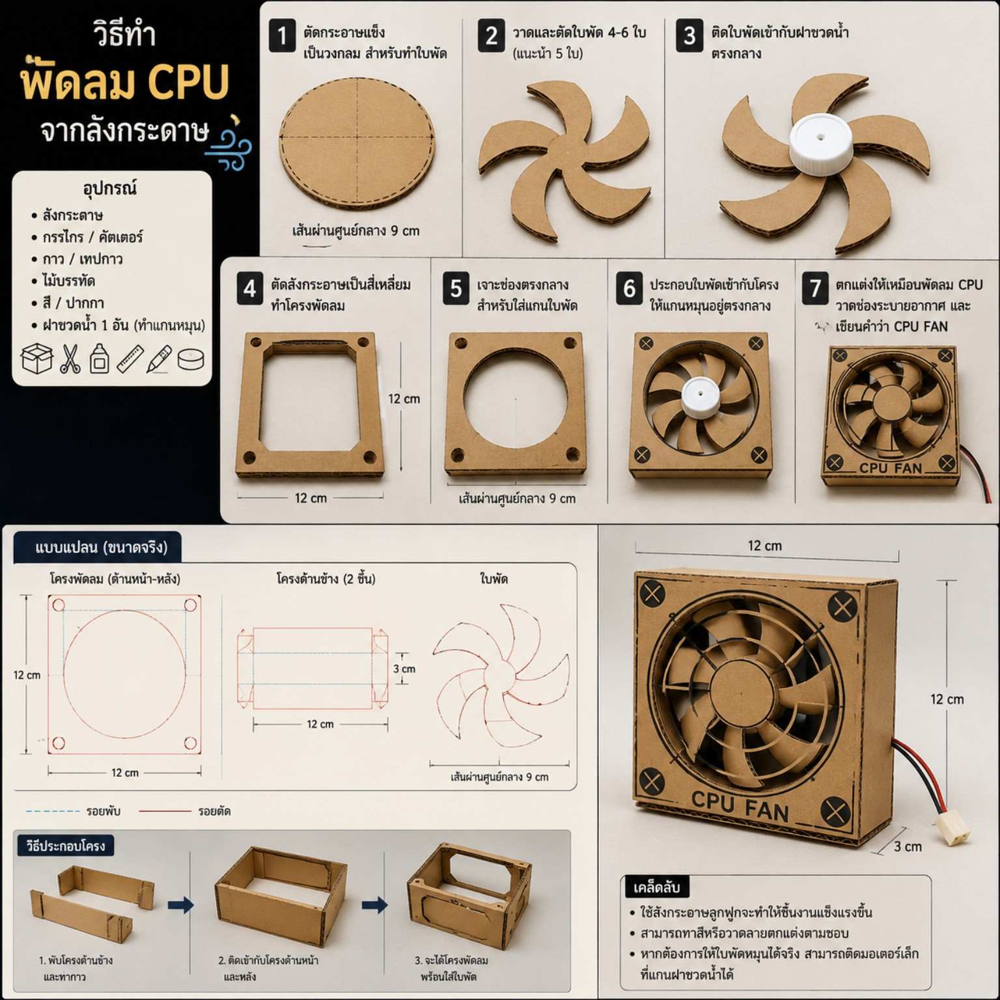

🧰 อุปกรณ์ที่ใช้
- 📦 ลังกระดาษ
- ✂️ กรรไกร / คัตเตอร์
- 🧴 กาว / เทปกาว
- 📏 ไม้บรรทัด
- ✏️ ดินสอ / ปากกา
- 🧢 ฝาขวดน้ำ 1 อัน
🔧 ขั้นตอนการทำ
1
ตัดกระดาษเป็นวงกลม
ตัดกระดาษแข็งขนาดประมาณ 9 ซม.
2
วาดและตัดใบพัด
ตัดใบพัด 4–6 ใบ แนะนำ 5 ใบ
3
ติดกับฝาขวด
ติดใบพัดให้มีระยะเท่า ๆ กัน
4
สร้างโครง
ตัดโครงขนาด 12 × 12 ซม.
5
ตัดช่องตรงกลาง
ตัดช่องวงกลมประมาณ 9 ซม.
6
ประกอบใบพัด
นำใบพัดติดกับแกนกลางและใส่เข้ากับโครง
7
ตกแต่ง
ตกแต่งให้เหมือนพัดลม CPU และเขียน CPU FAN
💡 เคล็ดลับ
- ใช้กระดาษลูกฟูกหลายชั้นเพื่อให้แข็งแรง
- สามารถทาสีและตกแต่งให้เหมือนพัดลมคอมพิวเตอร์ได้
- หากต้องการให้หมุนจริง สามารถเพิ่มมอเตอร์ขนาดเล็กได้